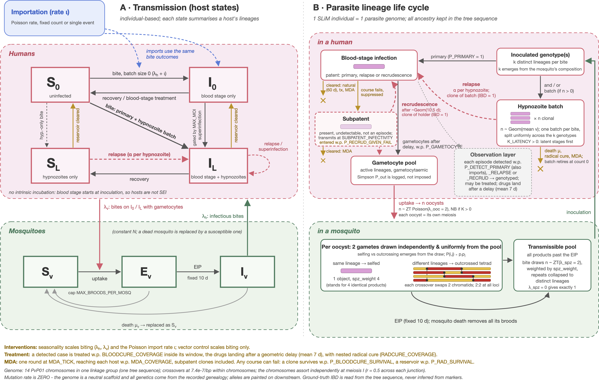
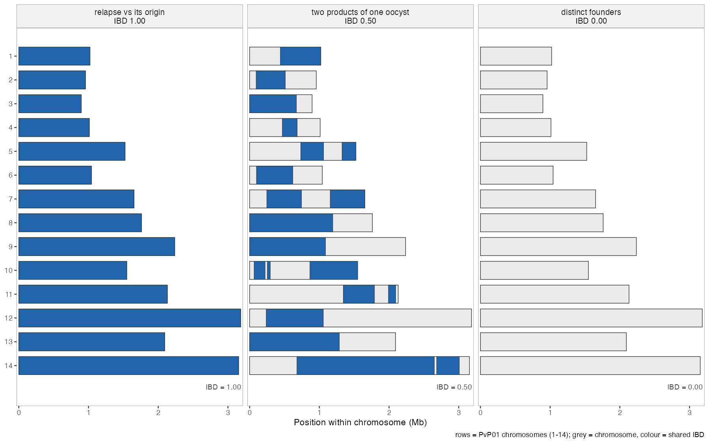

Pre-release (0.1.0). The package is under active development and both the interface and the model may change before 1.0.0. Work in progress includes hypnozoites genotyped independently of the bite’s primary infections, a structured source population for imported infections (imports currently enter as unrelated founders, which makes them maximally distinguishable), post-treatment prophylaxis, and more extensive calibration of the treatment and recurrence machinery.
If you are interested in using malariafwd or in contributing, please get in touch by opening an issue or contacting Dr Shazia Ruybal-Pesántez (shazia.ruybal@isglobal.org).
Forward simulation of Plasmodium vivax transmission and genetics — an R interface to a SLiM (Eidos) + tskit individual-based model. The model simulates blood-stage infection, the hypnozoite reservoir and relapses, meiotic recombination in the mosquito, and importation/interventions on a neutral copy of the 14 chromosomes of the PvP01 reference genome, recording a tree sequence for ground-truth identity-by-descent (IBD).
An epidemiological model and a genetic model run together: each infection carries a real genome, so a question about transmission can be answered with genetics against a known truth.
Recurrence is three-state — relapse, reinfection and recrudescence — and every episode carries a ground-truth label, so a method that tries to tell them apart can be scored against the answer. recurrences() pairs each recurrence with the earlier episodes of its host, with their true origins and ground-truth IBD: the table such a method is scored against. Case management is modelled at the level of the patient: a course clears every patent clone the host carries, radical cure is nested inside it, and a clone that survives can be suppressed below patency and recrudesce later. All of it is off by default, so a bare run is an untreated closed system.
How the model fits together. Host states and the mosquito cycle on the left; what happens to a parasite lineage inside a human and inside a mosquito on the right — the hypnozoite reservoir, the subpatent compartment a failed treatment course can push a clone into, and the recrudescence that follows from it:

Genetics. The genealogy is recorded, so identity-by-descent is exact rather than inferred from markers. Shared segments for pairs of known relationship:

Requirements
-
SLiM ≥ 5.2. On any system,
conda install -c conda-forge slim(builds for Linux, macOS on Intel or Apple silicon, and Windows). On macOS the installer from the SLiM page works too; on Linux, conda or a build from source (the SLiM manual, chapter 2). On Debian and Ubuntu,apt install sliminstalls an unrelated login manager, not this SLiM. Windows is untested. If R cannot find SLiM (RStudio on macOS does not see the shell’sPATH), addMALARIAFWD_SLIM=/full/path/to/slimto~/.Renvironand restart R. - For the IBD and ancestral recombination graph (ARG) functions and
simulate_genotypes(): Python withtskit(≥ 1.0) andnumpy, through thereticulatepackage. Either route works. Automatic: with no Python chosen, reticulate sets up its own environment with these modules the first time an IBD function runs; this needs internet once and a few hundred MB in the user cache. Your own Python: setRETICULATE_PYTHON=/path/to/python(in~/.Renvironto keep it) before the first IBD call of a session. - On a cluster whose compute nodes have no internet, run
check_setup()once on a node that has it; later sessions that share the same user cache may then reuse the environment. If that does not work, use your own Python.
check_setup() reports what is found.
Install
# install.packages("pak")
pak::pak("shaziaruybal/malariafwd", dependencies = TRUE)dependencies = TRUE also installs the suggested packages that the plots and the IBD functions use (ggplot2, patchwork and reticulate); without it you get only what the package needs to load, and the first plot or IBD call fails. remotes::install_github("shaziaruybal/malariafwd", dependencies = TRUE) does the same thing. The vignettes are on the website; to install them as well, use remotes, which can build them:
remotes::install_github("shaziaruybal/malariafwd", dependencies = TRUE, build_vignettes = TRUE)which needs pandoc (RStudio includes it).
Check it works
quickstart.R installs the package into your R library, runs one simulation and writes the diagnostic and model-output plots, in under a minute on a laptop:
Quick start
library(malariafwd)
check_setup() # SLiM, the model, and Python with tskit
# no SLiM yet? every function below also takes the run that ships with the package:
# run <- example_run()
# one run: 100 hosts and 250 mosquitoes for 18 months, a few seconds on a laptop. Transmission
# rises with BITING_RATE * N_MOSQ / N_HOSTS, so more hosts alone means less of it.
p <- vivax_params(N_HOSTS = 100, N_MOSQ = 250, BITING_RATE = 0.1, SIM_DAYS = 548)
# every parameter, its unit and the values it may take: ?vivax_params or param_info()
run <- run_sim(p, seed = 1, outdir = file.path(tempdir(), "demo"))
# the run's directory appears when the run has finished; a second run into it is refused
# unless overwrite = TRUE (or skip_existing = TRUE, which returns the same run)
# tidy outputs
ev <- load_events(run) # one row per event; ?events.tsv describes the columns
st <- load_state(run) # per-tick host state; ?state.tsv
summarise_run(run) # over the second half of the run: prevalence, complexity of infection (COI),
# entomological inoculation rate (EIR), force of infection (FOI), molecular
# force of blood-stage infection (molFOB), relapses
# ground-truth IBD (tskit)
cs <- classify_cases(ev)
x <- ibd_pairs(run, ids = cs$pedigree_id) # keyed by pedigree id; read with ibd_lookup()
recurrences(ev, ibd = x) # each recurrence vs its host's earlier episodes
new_infection_diversity(run) # relatedness of the transmitting population
# parallel sweep (see ?run_grid; use future::plan() for a cluster). Calling it again resumes:
# cells that already hold their run are not run again
res <- run_grid(
list(low = vivax_params(BITING_RATE = 0.06),
hi = vivax_params(BITING_RATE = 0.12)),
seeds = 1:10, outdir_base = file.path(tempdir(), "sweep"), workers = 2)
load_grid(file.path(tempdir(), "sweep")) # the grid's record, grid.tsvChecking and exploring a run
plot_diagnostics(run) # one-call health dashboard: prevalence, incidence + force of
# blood-stage infection by origin, COI, reservoir, lineage richness
event_types() # what every event_type in events.tsv means
force_of_infection(run) # rows by window and origin: imported + local = FOI, + relapses = molFOB
classify_chain(ev) # each case's WHO class from its true chain back to an import
classify_travel(ev) # what a travel-history rule concludes instead, to score against itGenetics toolkit
# a relapse and the batch of hypnozoites it came from, by pedigree id (the tree sequence's key)
rel <- ev[event_type == "hypnozoite_activation" & parent1_pedigree_id != -1][1]
a <- rel$pedigree_id; b <- rel$parent1_pedigree_id
# pairwise IBD, and the segments behind it
m <- as.matrix(x); m[1:4, 1:4] # the quick start's x as a matrix, one row per genome
ibd_segments(run, a, b) # the shared stretches, split by chromosome
plot_ibd_pair(run, a, b) # IBD "karyotype" -- 14 chromosomes, shared blocks
plot_relatedness_ladder(ibd_truth_pairs(run)) # IBD by known relationship vs the textbook rungs
# marker genotypes painted on the genealogy, with the truth behind every call
loci <- data.frame(chrom = 1:14, pos = 1e5, plaf = 0.3)
g <- simulate_genotypes(run, cs$pedigree_id, loci, error = 0.01, seed = 1)
write_vcf(g, "cases.vcf")
# the ARG itself, in time. The genealogy is a FOREST (see ?arg_summary), so tskit's branch
# statistics are no relatedness measure on it; arg_tmrca() is.
arg_summary(run) # trees, edges, roots per tree, oldest root
arg_tmrca(run, a, b) # genealogical DEPTH to the common ancestor, plus
# `coalesced`: how much of the genome has one at all
# calibrating the uptake draws: LAMBDA_* is a PRE-truncation rate, not a mean count
uptake_moments(2, k = 1) # what a setting actually produces
uptake_calibrate(mean = 2.5, var = 6) # target moments -> lambda, KLearn more
- Getting started: a run, from its parameters to its ground truth and IBD.
- Choosing parameters: the parameters that are easy to get wrong, and how to choose a value for each.
- Reading the outputs: what each output holds, and how to read it.
-
Reference: every function, starting with the terms they share (
?malariafwd). - Model description: the model in full, with its parameters and assumptions.
- Design decisions: why each modelling choice was made.
- Validation: how the model is checked, and what each check found.
- Derived metrics: what each number a run yields means, and how it is counted.
- Ongoing and future work: the sensitivity analyses still needed and the extensions planned.
- The validation scripts are installed with the package, with the results of their last run in
RESULTS.md: list them withdir(system.file("validation", package = "malariafwd"))and run one withsource(), for examplesource(system.file("validation", "audit_events_and_ibd.R", package = "malariafwd")).
How it works
The model runs as a subprocess (processx, shell-free) with parameters passed as -d overrides; it writes events.tsv, state.tsv, plasmo.trees, and a provenance snapshot into each run directory (?events.tsv and ?state.tsv describe the columns). reticulate + tskit are used only to compute IBD from the recorded tree sequence. Multi-run sweeps parallelise via future. Set VERBOSE = TRUE to see the full per-event narration; the default is quiet.
Limitations
Worth knowing before drawing a conclusion from a run. The full list, with the reasoning behind each, is in the model description.
- Imported parasites are unrelated to local ones. Imports are drawn as fresh founders, so they are maximally distinguishable — any import-detection result is an upper bound.
-
Genotypes per bite is an assumption. No study has measured how many genotypes a natural bite delivers. At the defaults (
LAMBDA_OOCYSTSandLAMBDA_SPOROZOITESof 2) a bite can co-transmit several; set both to 0 for one genotype per bite, and sweep them. - No within-host parasite densities. Clones do not compete, detectability does not depend on parasitaemia, and infectiousness is a per-clone property.
- The genome is neutral (mutation rate 0): no selection, no drug resistance, no sequence divergence. IBD is exact because it is read from the genealogy rather than inferred.
-
Genotypes are painted, not drawn from a real population.
simulate_genotypes()gives each founder template and import independent alleles from the frequencies you supply, so there is no background relatedness or linkage disequilibrium among them. - Homogeneous mixing, with no spatial structure or heterogeneous biting, and no post-treatment prophylaxis — so a treated host can be reinfected immediately.
Citing and getting help
Please open an issue for bugs and questions, and get in touch before building on the package — see the pre-release note above. The contributing guide says what a bug report needs. The project is released with a Contributor Code of Conduct; by contributing to it, you agree to abide by its terms. Cite malariafwd with citation("malariafwd"); it also lists the papers for SLiM and tskit, which run the model and record its genealogy. An archived DOI will be added at the first tagged release.